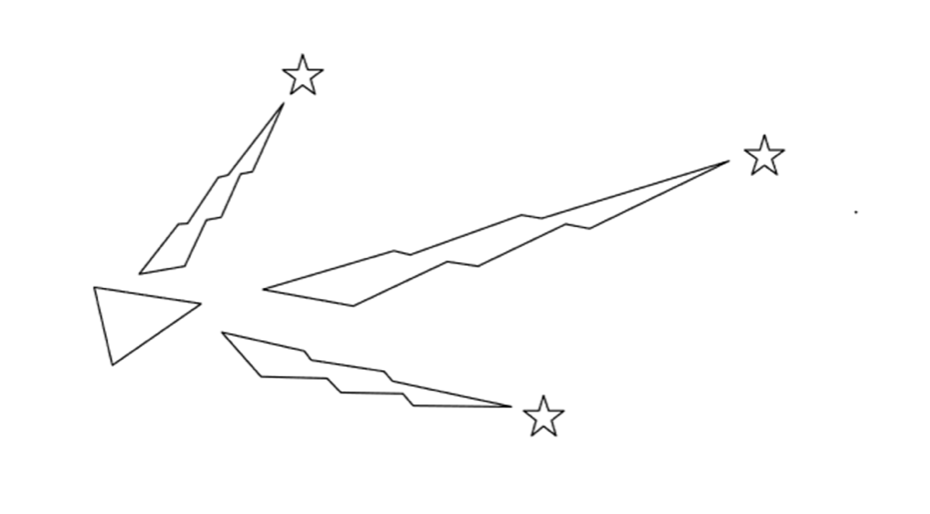
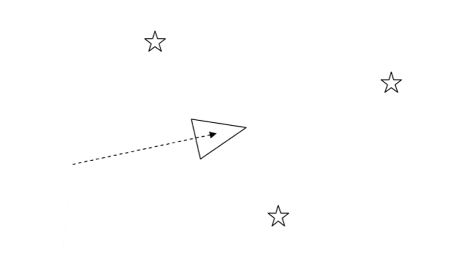
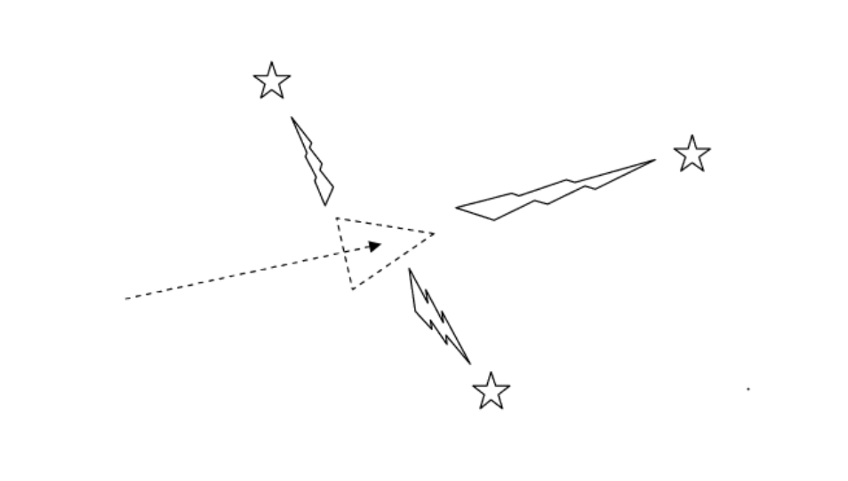
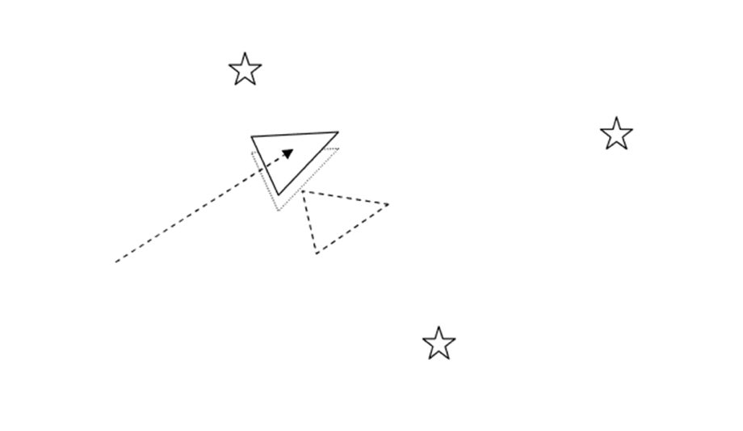
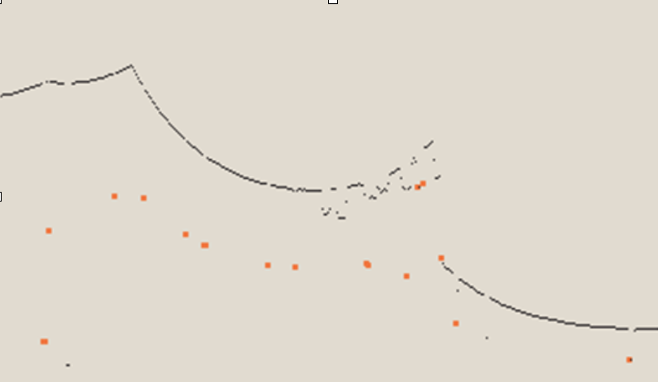
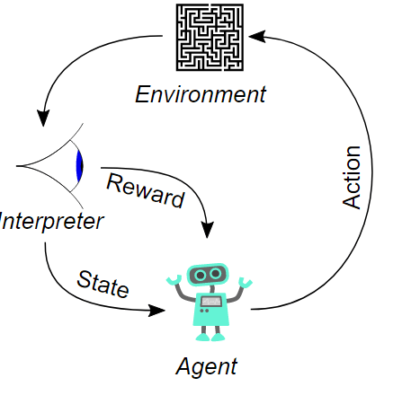

Definition
SLAM stands for Simultaneous Localisation and Mapping.
SLAM is not a particular algorithm or piece of software, but instead it is the problem of trying to simultaneously localise (i.e. find the position/orientation of) some sensor with respect to its environment, while at the same time creating a map of the environment.
So SLAM depends on sensor data, and I'm going to go on to describe the role that sensor data plays in the SLAM process:
An overview of the SLAM process
The following pictures, from top left to bottom right give a general overview of the SLAM process
1. In this picture, the stars represent landmarks, and initially the position is estimated by sensors.
2. In this picture, the robot moves thinking that it is in the position represented by the triangle. The dotted line represents the distance that the robot has moved. This distance is given by the odometry alone.
3. Here, the robot measures the distance using sensors and landmarks.
4. Finally, the robot starts relying more on sensors than odometry. The dotted triangle represents where it thinks it is while the solid triangle shows where exactly the robot is.
What is done with the data
A wide range of data is collected during the SLAM process. One of the most important pieces of data that is collected is data about the surroundings. This data is then used to identify landmarks in the environment.
Landmarks
Landmarks are distinguishing features in the environment that can be easily re-observed by the robot and distinguished from the environment. They are used to help the robot determine its location (to localize itself in other words).
An analogy to this would be to imagine yourself blindfolded. If you move around blindfolded in a room, you might reach out and touch objects and walls so that you don’t get lost. There are some things that you may touch that will help you figure out where you are - e.g if you can feel the door frame then you know that you are near the exit. Using this analogy, you can view the robot’s sensor data as it’s feeling of touch. A good example of a landmark is the statue of liberty, because it’s unique and can be seen from various locations - i.e from the sea, land or air. Another example are the wooden pillars at a dock which could serve as good landmarks for an underwater vehicle. A further example would be the well defined corners and straight lines in a room.
 As an example, wooden pillars at a dock could serve as good landmarks for an underwater vehicle
As an example, wooden pillars at a dock could serve as good landmarks for an underwater vehicle
Another important point is that any landmark should be stationary. The whole point of a landmark is to help a robot to objectively locate itself in an environment. If the landmark is not stationary, then this will not be possible.
As a summary:
- Landmarks should be easily re-observable
- Landmarks should be easy to distinguish from each other
- Landmarks should occur frequently in the environment
- Landmarks must be stationary
Landmark extraction
There are various algorithms that are used to extract landmarks from the environment. One example is called Spikes. Another, which I won’t go into, is called RANSAC.
Spikes
Spike landmark extraction uses big changes in sensor data to identify landmarks. For example, if a laser scanner is used,  then the algorithm finds values in the range of the laser output that differ by a certain amount e.g 1.0 metre. This will identify large changes in the laser scan e.g from when some of the laser scanner beams reflect off of a wall and some of the laser beams don’t hit the wall but are reflected from some things further behind the wall.
This algorithm assumes that the landscape of the environment will change a lot between two laser beams, so it won’t work very well in smooth environments. Spikes is a fairly simple algorithm, but it is not robust enough in environments that contain people. This is because Spikes will identify people as landmarks because they stand out from the environment. There are various advantages and disadvantages for the different extraction techniques.
Reinforcement learning
Reinforcement learning is a branch of artificial intelligence. The diagram below gives an overview of the process.
It allows machines to determine ideal behaviour in order to maximise their performance in an environment based on actions that they perform. Reward feedback is used for the machine to learn its behaviour - this is the reinforcement signal.
This is done by estimating the value of a particular state. The estimate is adjusted over time based on the reward feedback. If all the states and actions are tried a sufficient amount of times then the optimal behaviour will be reached.
Reinforcement learning is best suited to situations where there is little to no information known about the ideal behaviour beforehand. This means that it is very useful in SLAM algorithms.
Saftey
Compared to other AI related tasks, SLAM is less of a risk to health and safety because it’s objective is restricted to mapping and navigating it’s way through an environment. The only safety concern related to this would be if an someone used such a process to map an environment for malicious purposes e.g robbers using SLAM to identify the structure of a room in a bank which has restricted access, in order to assist themselves in breaking into the bank.
Limitations
Computational cost
This is mainly because it requires a large amount of computing power to gather all the sensor data from the environment and then process that data in order to both map and localise the robot. This is even more of an issue when dealing with 3D, rather than 2D SLAM
[SLAM] is one of the fundamental challenges of robotics . . . [but it] seems that almost all the current approaches can not perform consistent maps for large areas, mainly due to the increase of the computational cost and due to the uncertainties that become prohibitive when the scenario becomes larger. Aulinas, Josep (2008). "The SLAM Problem: A Survey". Proceedings of the 2008 Conference on Artificial Intelligence Research & Development: 363–71. Retrieved July 15, 2015.
Related to landmark extraction
Another limitation, which was disccussed earlier, is that moving objects can confuse the landmark extraction process.
Memory costs
In terms of reinforcement learning, it takes up too much memory to store the values of each state, especially in complex problems like SLAM. A solution to this is to use approximation techniques like decision trees or neural networks. However, these approximations can negatively impact the quality of the solution.
Sources- Kudan.eu
- tams.de
- Aulinas, Josep (2008). "The SLAM Problem: A Survey". Proceedings of the 2008 Conference on Artificial Intelligence Research & Development: 363–71. Retrieved July 15, 2015.
- Dissanayake, MWM Gamini, et al. "A solution to the simultaneous localization and map building (SLAM) problem." IEEE Transactions on robotics and automation 17.3 (2001): 229-241.